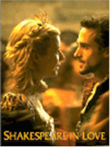
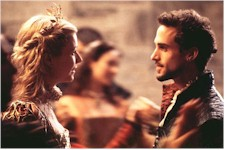
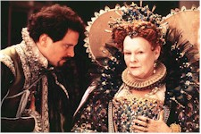

Contents | Features | Reviews | Books | Archives | Store |
 |
|
| Movie Credits | Buy It! |
Shakespeare in Love
Review by Gregory Avery
Posted 25 December 1998
|  | Directed by John Madden. Starring
Joseph Fiennes, Written by Marc Norman and Tom Stoppard. |
That wacky Bard! He almost ended up naming one of his greatest works "Romeo and Ethel, the Pirate's Daughter", and making it a comedy instead of a tragedy. That's what people want, one theatre proprietor tells him: plays with "a little bit of comedy, and a dog" in them. One young theatergoer says he would like to see more blood-'n'-guts on the stage, like in one of Will's last plays, "Titus Andronicus". (The joke being that "Titus Andronicus" is generally considered to be Shakespeare's WORST play.) When Will is troubled with writer's block, he goes to see a "doctor of psyche", who asks him if he has been "humbled" in the matters of sex. (Well, the wife and kid are up in Stratford, and he's all the way down here in London....) But then, Will meets and falls in love with a young lass (played by Gwyneth Paltrow) who adores the poetry in his plays, but has been brokered to marry a man (the hopeless Colin Firth) who will take her away to...VIRGINIA, of all places! She and Will meet secretly, just like the star-crossed lovers who emerge in Will's work-in-progress. The lass even disguises herself as a man -- at a time when women were outlawed from appearing on the stage, and women's roles had to be played by boys -- and rehearses the part of Romeo. Will's contemporary and rival, Christopher Marlowe (Rupert Everett, in an unbilled appearance), suggests he tweaks the new play's title, "Romeo, Gentleman of Verona". "'Romeo and Juliet' sounds better," he proffers. And they say that Marlowe had more than a passing influence on Shakespeare's work, all along!
A lot of people have been falling all over this film of late, but I must raise my hand and say, "But, hold," for the picture ultimately seems but a slim enterprise whose small bits of wit and cleverness do not entirely make up for its callowness. As Will, Joseph Fiennes, brother of Ralph, is slender, with big dark eyes that tend to swallow-up the rest of his face. (Note, regarding future performances: Try not to suck in your cheeks, Joseph.) He may turn into an actor of presence, but, for now, he has a limited range (at times, he suggests a Keene painting on a beanpole), and while he expresses ardor in his scenes with Gwyneth Paltrow, who plays the young lass, Viola (bits and pieces of characters and events that will turn up in Shakespeare's later plays litter the scene, here), he doesn't convey the inspiration or brilliance of a great artist. (There's a good reason, if you're familiar with the work, as to why a lot of people have not attempted to portray Shakespeare.) Trying for the commonplace and believable, the filmmakers have Will race to his writing table, spit once behind him for good luck, and sit down to scribe away, emerging daily with ink-stained hands and fingernails. This is how all great artists work, the film tries to tell us. It's mundane.
On the other hand, Gwyneth Paltrow seems to have resurfaced -- for now -- from her bout with Brad Pitt Fever, during which she somnambulated, aloof and remote, through three recent pictures, and she appears, here, as the full-blooded actress who first allured and beguiled us back when she appeared in Flesh and Bone. The picture's high point occurs in a sequence that shows Will coming up the lyrical prose by which Romeo first woos Juliet while trysting with Viola, who in turn reiterates the prose, incognito, during the next day's rehearsals, after which she and Will meet while he is writing the pages for the actors to work from the following day. In the roundelay of scenes on and off the stage, the beautiful pages of verse seem to rise from the union of their bodies.
The picture does give us some idea, during the climatic scenes, of what it must have been like to see a work like "Romeo and Juliet" performed on the stage for the very first time, ever. The audience, both upper-class and commoner, come expecting one thing, and end up stunned, not just from surprise but also from the emotional power of the work. Then, in one of the most far-out "deus et machina" contrivances one is likely to see in anything, lately, Judi Dench, who played Queen Victoria in director John Madden's last film, Mrs. Brown, appears as if out of thin air as the aging, but still highly forceful, Queen Elizabeth I. As if by the glance of her hand, she ensures immortality upon the new play. "I think you should write something lighter, next time," she tells Will (and, if I recall correctly, filmmakers have her use the singular, instead of the regal plural, tense). He does, but I still had trouble imagining Joseph Fiennes doing it.
Contents | Features | Reviews | Books | Archives | Store
Copyright © 1999 by Nitrate Productions, Inc. All Rights Reserved.